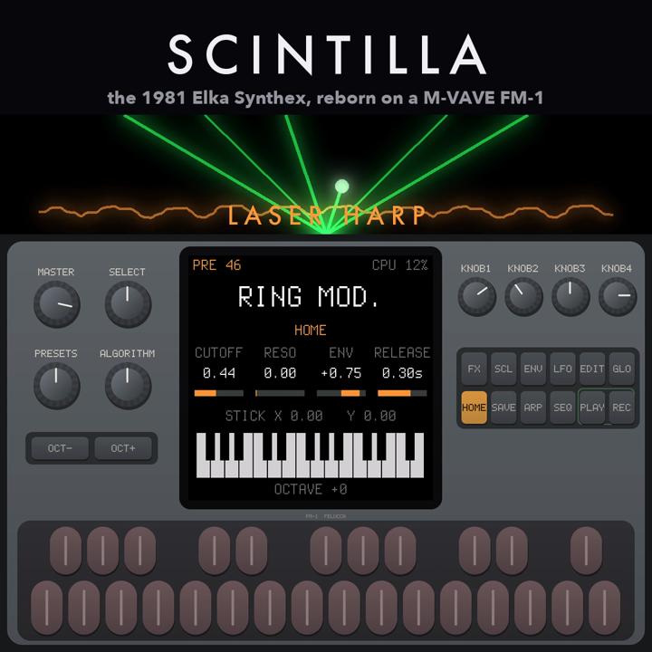

Firmware for the M-VAVE FM-1
The 1981 Elka Synthex,
reborn on the FM-1.
All 80 factory sounds, Paul Wiffen's laser harp "Ring mod." among them: the Synthex of synthex-web, ported to integer C and checked sample by sample against the original, playing on the FM-1's own CPU. Two layers of 8 voices, chorus and reverb, and the four knobs edit what is on the screen.
Or the .fwsc from the latest
release, with the FM-1 Firmware Hub or
firmware/tools/fm1_install.py. Scintilla is also a module of
fm1-dock, next to other synths.

What it is
The sounds
The Synthex's 80 factory sounds: PRESETS 10 to 49 and MEMORIES 10 to 49, on the PRESETS knob. The forty PRESETS are decoded from the Synthex's own EPROMs and calibrated against a recording of the instrument: how that was done.
The voices
Two layers of 8 voices, single, split or double; poly, mono or unison; glide and portamento.
The effects
Chorus, and an algorithmic reverb: plate, room, hall or galactic.
On the knobs
KNOB1 to KNOB4 edit the four parameters on the screen, on pages for the oscillators, mixer, filter, envelopes, LFOs, glide, output, reverb and joystick.
MIDI
In over USB and the DIN jack: notes with velocity, pitch bend, CC 1, 74, 91 and 93, program change. Velocity and aftertouch from the FM-1's own keys.
What it keeps
Its settings only: its sounds are built in, and it reads no other firmware's projects or samples. Not there yet: the delay, and saving edited sounds.